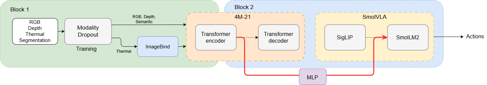

{kind=link}
{kind=link}
{kind=link}
Column 1
Add a short description for the first video/image.
State-of-the-art Vision-Language-Action (VLA) models rely mostly on RGB perception and suffer catastrophic performance degradation under sensor failure
We propose, study, and discard a general pipeline and training strategy that is focused on mitigating this dependence and allowing for massive multi-modality out-of-the-box. The main building block of our pipeline is the 4M-21 model, capable of combining the inputs into a latent representation. This abstraction is then passed through a MLP to a fine-tuned SmolVLA that handles action generation, potentially leading to a multi-modal robust VLA capable of handling sensor corruption and even full modality dropout.
We show that this approach is not sufficient for the task and analyze the factors that make it fail. After showing the characteristics this approach is lacking, we propose multiple solutions to improve the pipeline and achieve multi-modal robustness.
Current VLA models are not designed with sensor robustness in mind: they assume all inputs are clean and present at inference time. Yet recent work shows that even small perturbations such as Gaussian noise, motion blur, or spatter can cause success rates to drop from 90% to below 10%. In real deployments, sensors fail, get occluded or degrade and a robot policy that fails under these conditions is not deployable. That is why we aim to build a VLA that is more robust to sensor errors.
Why does this matter?
Our approach. We test a sensor-robust multi-modal VLA that (i) leverages four complementary modalities (RGB, depth, segmentation, thermal) and (ii) is trained with corruption, using a frozen 4M-21 encoder and a modality-dropout curriculum. (iii) We then propose changes and upgrades to the pipeline that could lead to better results and highlight the shortcomings of this approach.
Vision-Language-Action (VLA) models have become the dominant paradigm for general-purpose robot manipulation. SmolVLA, our base model, is a lightweight VLA that pairs a frozen SmolVLM2 vision-language backbone with a flow-matching action expert, matching much larger models. The larger π0 established the flow-matching design SmolVLA inherits. Both, however, assume a fixed RGB sensor suite that is clean and fully present at inference time — the assumption our work targets.
Robustness of VLAs. Recent analyses show this assumption is fragile. LIBEROPlus and Guo et al. report that mild corruptions (noise, blur, partial occlusion) can collapse success rates from ~90% to below 10%. RobustVLA tackles this through robustness-aware post-training but focuses on RGB noise and does not consider full sensor disappearance. CRT reconstructs corrupted RGB inputs before the policy. All these methods improve resilience within the RGB modality; none addresses the case where an entire modality is absent at test time, which is our setting.
Multimodal VLAs. OmniVLA adds infrared, mmWave and acoustic sensing via masked-image overlays. ForceVLA adds force sensing to π0 through a mixture-of-experts module, motivating our plug-in adapter design. Both require the new sensors to be present at test time and do not analyze partial sensor failure. Our perception backbone is 4M-21, which fuses arbitrary subsets of available modalities, with ImageBind bridging in synthetic thermal from ThermalGen. We adopt the MLP connector design of LLaVA-1.5, and a curriculum dropout schedule inspired by masked-training strategies for sensor-robust control. Evaluation uses LIBERO with our corruption protocol.

Our pipeline replaces SmolVLA's SigLIP encoder with a frozen 4M-21 backbone and bridges it back into the policy with a small trainable connector.
Perception. 4M-21 is the central design choice: because it is trained to operate on arbitrary subsets of its input modalities, dropping a sensor at inference is in-distribution for it rather than a degenerate input. The frozen 4M-21 XL encoder fuses the available modalities into a token sequence (B, 196, D). Thermal is embedded beforehand by the frozen ImageBind encoder into a 1024-D vector that 4M-21 accepts natively.
Action. A two-layer GELU MLP connector (LLaVA-1.5 style) projects the 4M-21 tokens into SmolLM2's embedding space. These are concatenated with language and robot-state tokens and passed to the SmolVLA policy, whose flow-matching action expert outputs continuous 7-DoF action chunks. Only the connector and LoRA adapters are trainable (~8M parameters), against ~2B frozen across 4M-21, ImageBind and SmolVLA, keeping training feasible on one Tesla V100 GPU.
We build on binhng/libero_10_lerobot_mask_depth, a LeRobot-formatted version of LIBERO-10 providing aligned RGB, depth, and segmentation. Since LIBERO has no thermal sensor, we augment it with a synthetic thermal modality generated from RGB via ThermalGen. Each Parquet shard is processed by generating thermal frames and appending them as an aligned modality; with batch inference across parallel SLURM jobs we reduce preprocessing from ~100h to ~13h. ThermalGen is synthetic and a known weak link — its outputs are not real thermal measurements, a caveat we carry into the analysis.
Robustness is induced by the training schedule. During training each modality is independently dropped or corrupted with probability 0.5, following a curriculum that transitions from clean inputs to full dropout: corruption starts mild and grows in severity over epochs, drawn from Gaussian noise, horizontal motion blur and/or centered occlusion. The model thus first learns multimodal fusion under near-clean conditions, then progressively learns to rely on redundant cues as modalities degrade or disappear. This is what prevents the harmful-dependency failure mode: by repeatedly removing each sensor, none becomes indispensable.
Training proceeds in two stages: Stage 1 trains only the MLP connector with all pretrained modules frozen, aligning 4M-21 features with SmolLM2's token distribution; Stage 2 fine-tunes the connector and LoRA adapters under the full dropout curriculum. We validate incrementally to isolate failures: first an RGB-only run with no corruption, to verify the pipeline matches the vanilla SmolVLA baseline and the connector is not the bottleneck; then the dropout curriculum on RGB alone; and only once both pass do we add depth, segmentation, and thermal, evaluating under clean inputs, single-modality dropout, and the corruption protocol. This staged design lets us attribute any regression to a specific addition — a modality, the curriculum or the connector.
We evaluate our approach on the four LIBERO benchmark suites: Spatial, Object, Goal, and Long. The vanilla LIBERO evaluation pipeline only provides RGB as input. This can be circumvented, as from the base physics simulator used under the hood (MuJoCo) depth and object segmentation can be extracted directly. This way "real-time" multi-modal inputs can be passed to our model to ensure the evaluation accounts for these capabilities. We also included a corruption module that can perturb the images passed during evaluation to measure the robustness of our model. Performance is measured using task success rate averaged across all tasks.
Baseline model. Our starting point is SmolVLA, a lightweight pretrained vision-language-action model relying on a SigLIP visual encoder. The objective of this work is to replace the original SigLIP encoder with the multimodal 4M-21 encoder while preserving the pretrained robotic policy.
Implementation details. All experiments are conducted on the EPFL IZAR cluster using NVIDIA A100 GPUs. The pretrained 4M-21 encoder and SmolVLA backbone remain frozen throughout training. Only a lightweight MLP projector is optimized to map 4M visual tokens into the latent space expected by SmolVLA.
Our first approach consisted of directly replacing the SigLIP visual encoder with 4M-21 and training only a shallow MLP connector using the downstream action loss. The underlying assumption was that the policy supervision alone would implicitly align the projected 4M representations with the latent space expected by SmolVLA.
However, this approach completely failed during evaluation, reaching a 0% success rate on LIBERO tasks. Examples of tasks the robots need to complete include:
We identified the global representation alignment as one key issue. The two latent spaces were strongly separated, indicating severe representation mismatch. Quantitatively:
| SigLIP | 4M + MLP (action loss only) | |
|---|---|---|
| Mean cosine similarity to SigLIP | 1.0 | 0.014 |
| Mean L2 norm | 36.05 | 453.62 |
We then tackled this by aligning both SigLIP and 4M + MLP features via a global cosine alignment loss. After distillation, the projected 4M embeddings became significantly closer to the SigLIP manifold:
| SigLIP | 4M + MLP (+ global distillation) | |
|---|---|---|
| Mean cosine similarity to SigLIP | 1.0 | 0.271 |
| Mean L2 norm | 36.05 | 29.64 |
But even with these modifications, we observed unstable robotic behaviors including repetitive motions and gripper collapse, where the policy converged to degenerate open-gripper trajectories producing a 0% success rate. The mean cosine similarity suggests the latent representations produced by the projected 4M features remained incompatible with the pretrained policy backbone.
Token-level alignment. We observed that SmolVLA relies heavily on spatial visual tokens through transformer cross-attention mechanisms. We therefore replaced the pooled distillation loss with a token-level alignment objective. Token-level distillation successfully restored spatial correspondence between visual tokens, producing strong diagonal similarity patterns. Token-level cosine similarity increased to approximately 0.86, while per-dimension Pearson correlation reached 0.69, indicating strong latent alignment between the two representation spaces.
Although representation geometry and spatial correspondence improved significantly, the policy still failed during downstream robotic evaluation. Analysis of the distribution of token norms produced by the projected 4M features compared to the original SigLIP embeddings revealed that projected 4M tokens remained severely under-scaled in magnitude, with average norms nearly one order of magnitude smaller than SigLIP representations.
This is particularly important because transformer attention mechanisms are highly sensitive to embedding magnitudes. Even when embeddings share similar directions and spatial organization, scale mismatches can strongly reduce the contribution of visual tokens inside the pretrained backbone.
Our experiments therefore suggest that encoder replacement in pretrained VLAs requires simultaneously matching:
LIBERO task success rate (%) after replacing the SigLIP encoder with 4M-21:
| Method | Spatial | Object | Goal | Long | Avg. |
|---|---|---|---|---|---|
| SmolVLA (baseline) | — | — | — | — | 87.3 |
| Ours (action loss only) | [TODO] | [TODO] | [TODO] | [TODO] | 0.0 |
| Ours (+ global distillation) | [TODO] | [TODO] | [TODO] | [TODO] | [TODO] |
| Ours (+ token distillation) | [TODO] | [TODO] | [TODO] | [TODO] | [TODO] |
Our experiments progressively revealed that replacing the visual encoder inside a pretrained VLA is substantially more difficult than expected. Even after recovering strong cosine similarity, spatial token correspondence, and compatible latent geometry, the robotic policy still failed during downstream evaluation.
This suggests that pretrained VLAs rely on deeper structural properties of the original visual latent space — including internal attention dynamics and activation scaling — which are not preserved by shallow feature projection alone. Successful encoder replacement likely requires stronger adaptation mechanisms than simple latent alignment through a lightweight MLP projector.
The primary objective of this project was to construct and evaluate a multimodal Vision-Language-Action architecture capable of mapping sensory inputs to continuous robotic control trajectories. To this end, we engineered an end-to-end training and evaluation pipeline that integrated a multimodal vision encoder with a language model backbone, ultimately conditioning a flow-matching action expert. However, empirical evaluation of the final trained model resulted in a 0% task success rate. The model consistently failed to execute targeted manipulation tasks, exhibiting this failure even when evaluated on baseline, uncorrupted data without the planned introduction of sensor dropouts.
Diagnostic analysis indicated that the action expert experienced severe mode collapse. Rather than generating context-aware, dynamic movement trajectories, the network consistently converged on a static output corresponding to the statistical average of the training dataset. These results suggest that the flow-matching action module is highly sensitive to inconsistencies in the conditioning representations. Mapping a vision backbone to a language model using a standard MLP connector may be insufficient for this task. While the project successfully established the complex software infrastructure required to fuse these disparate architectural components, the failure to achieve functional robotic control underscores the significant difficulty of ensuring representation alignment in composite, multimodal systems.
The defining limitation of our current implementation involves the highly unstable training dynamics and the resulting fragility of the learned representations. The collapse of the action head appears to be associated with instability in the representations produced by the vision encoder and connector. The simple MLP connector utilized to bridge the high-dimensional multimodal latent space and the language model's embedding space likely lacked the structural capacity to resolve such complex distributions. Because the action expert conditioned its outputs on these fluctuating representations, it is hypothesized that the flow-matching loss could not find a stable gradient, ultimately defaulting to a safe-mode average.
This methodological limitation was heavily exacerbated by severe computational bottlenecks during the evaluation phase. Our current testing framework proved computationally demanding, requiring approximately 12 hours to evaluate a standard suite of 100 robotic episodes (roughly seven minutes per episode). This constrained our ability to conduct rigorous hyperparameter sweeps, isolate the exact steps where representation degradation occurred, or rapidly prototype alternative architectural configurations.
Several directions could be explored in future work:
Although the final policy did not achieve successful task execution, the project highlighted several practical challenges involved in adapting pretrained vision-language architectures for robotic control. In particular, the experiments underscored the importance of stable representation alignment between perception and action modules. These observations can help guide future investigations into multimodal systems and provide a clearer understanding of the factors that may limit end-to-end performance.
Here you can see possible visualizations that can be used in this website
Add a short description for the first video/image.
Add a short description for the second video/image.

\[ D_{\mathrm{KL}}(P \parallel Q) = \sum_{x} P(x)\,\log\!\left(\frac{P(x)}{Q(x)}\right) \]
The table format below can be used for results and other purposes.
| Method | Metric 1 | Metric 2 | Notes |
|---|---|---|---|
| Baseline | 0.00 | 0.00 | Reference setup |
| Method A | 0.00 | 0.00 | First variant |
| Method B | 0.00 | 0.00 | Second variant |